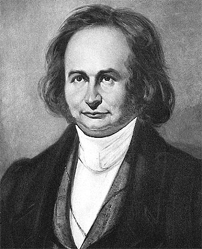

Carl Gustav Jacob Jacobi
Biografía
Carl Gustav Jacob Jacobi (Potsdam, 10 de diciembre de 1804 – Berlín, 18 de febrero de 1851) fue uno de los matemáticos más influyentes del siglo XIX. Sus trabajos sobre funciones elípticas y theta, la dinámica de Hamilton‑Jacobi, los determinantes jacobianos y las leyes de reciprocidad superiores marcaron el desarrollo posterior del análisis, la física matemática y la teoría de números.
Nacimiento
Jacobi nació en el seno de una familia judía acomodada; fue el segundo de cuatro hijos del banquero Simon Jacobi y de Rachel Levy. Su tío Lehman le enseñó latín, griego y matemáticas antes de ingresar (1816) en el Gymnasium de Potsdam, donde saltó rápidamente a los cursos superiores. Con quince años intentó sin éxito resolver la ecuación quíntica por radicales.
Carrera académica
• Universidad de Berlín (1821‑1825). Estudió filología y matemáticas, doctorándose (1825) con una tesis sobre fracciones racionales. Ese mismo año se habilitó como Privatdozent, tras convertirse al luteranismo por razones profesionales.
• Universidad de Königsberg (1826‑1842). A los 22 años obtuvo una cátedra extraordinaria y en 1829 la ordinaria. Allí trabó amistad con Bessel y Neumann y produjo sus obras maestras: Fundamenta nova theoriae functionum ellipticarum (1829) y los ensayos sobre dinámica canónica (1834‑1837).
• Berlín (1844‑1851). Tras una crisis de salud por exceso de trabajo, se instaló en Berlín como pensionado real. Participó en la Revolución de 1848 defendiendo posiciones liberales; recuperó la asignación gracias a Alexander von Humboldt y continuó investigando hasta su muerte por viruela.
Muerte
Falleció a los 46 años en Berlín. Está enterrado en el cementerio Dreifaltigkeit I (Kreuzberg), cercano a la tumba del astrónomo Johann Encke. El cráter lunar Jacobi y el asteroide (12040) Jacobi honran su memoria.
Su nombre
Su nombre de bautismo fue Jacques Simon Jacobi. Más tarde lo germanizó a Carl Gustav Jacob y lo firmó en latín como Carolus Gustavus Jacobus. Las obras modernas lo citan habitualmente como C. G. J. Jacobi.
Contribuciones científicas
• Funciones elípticas y theta: desarrolló la teoría inversa de las integrales elípticas e introdujo las funciones sn,
cn, dn y las identidades modulares; su fórmula del triple producto es básica en teoría de particiones.
• Mecánica analítica: ecuación de Hamilton‑Jacobi, sistema canónico y transformaciones completas; base de la mecánica
cuántica de Schrödinger.
• Determinante jacobiano: generalizó la regla de cambio de variables a n dimensiones, herramienta clave en análisis y
geometría diferencial.
• Teoría de números: símbolo de Jacobi, reciprocidad cúbica y cuártica, sumas de Jacobi, pruebas de los teoremas de Fermat
(2 cuadrados) y Lagrange (4 cuadrados).
• Álgebra y polinomios simétricos: identidad de Jacobi, fórmula bialternante de los polinomios de Schur, relaciones de
Desnanot‑Jacobi.
Honores y legado
Miembro de las academias de Berlín (1836), San Petersburgo (1841) y Royal Society (1846). Recibió la medalla de la Academia de París (1840) por su trabajo en dinámica. El método «invertir siempre» (man muss immer umkehren) que inculcaba a sus alumnos inspiró a Riemann y Weierstrass. Su nombre pervive en conceptos como las sumas de Jacobi, el método de Jacobi para sistemas lineales y la identidad de Jacobi en álgebras de Lie.
Obras seleccionadas
- Fundamenta nova theoriae functionum ellipticarum (1829).
- Vorlesungen über Dynamik (public. póst., 1866).
- Canon arithmeticus (1839).
- Commentatio de transformatione integralis duplicis indefiniti (1832).
- Gesammelte Werke, 3 vols. (1881‑1891).
Referencia (formato APA):
Wikipedia contribuidores. (2025, 19 mayo). Carl Gustav Jacob Jacobi. En Wikipedia, La enciclopedia libre. Recuperado
19 de mayo de 2025, de https://es.wikipedia.org/wiki/Carl_Gustav_Jacob_Jacobi.